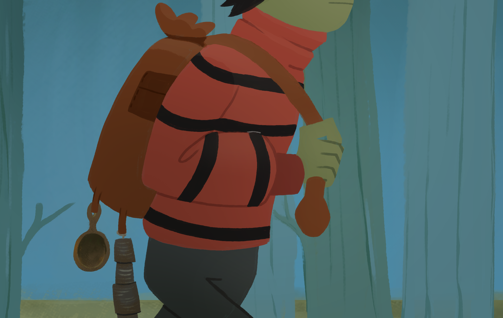

DEAR DIARY

Dear diary... I hope i'm doing this right. This is how people used
to hide their secrets, no? In a book that anyone could just
stumble upon and open. Yeah.. weird traditions humans used have i
guess.
Anyways, if you're reading this i guess that's
exactly what happened. You picked up this book from whatever chest
i hid it in. Which is saying something due to my special ability
to hide things in unexpected places. So i guess you're like an
actual profesional searcher or something.
And that is actually good news!
Who are you?

Personally, i have nothing to hide. I just find it kinda cool that
someone will read about me when im dead.
Thats why i'll hide this diary in some cave or something once i'm
done.

Dear diary
Rotting?